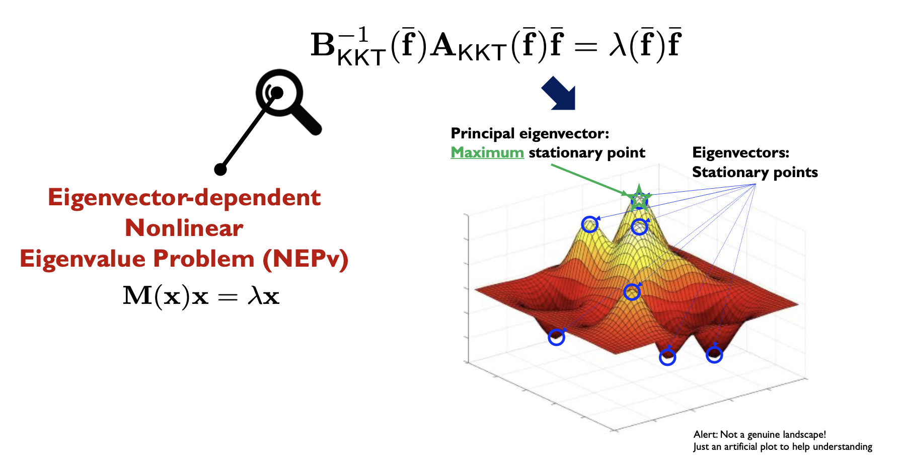

|
Research
We are interested in exploring a diverse range of topics related to wireless communications, signal processing, sensing, and machine learning, with a particular focus on both theoretical foundations and practical implementations.
Our primary objective is to develop effective algorithms and analyze wireless systems to enhance their efficiency. Overall, my research aims to push the boundaries of wireless technology and provide practical solutions that improve the performance and efficiency of wireless communication systems in the real world.
Currently, my research interests include investigating new MIMO techniques for 6G and beyond, conducting analysis on dense satellite networks, and exploring the applications of machine learning to wireless communications, as well as the integration of wireless technologies into machine learning. For more details, please see below.
MIMO + Optimization
|
 |
In 4G, the design of MIMO relies on convex relaxation techniques, such as WMMSE or SDR. The optimization problem is initially non-convex, yet we iteratively relax the problem to obtain a convexified solution. However, this approach has a significant drawback in that it leads to very high computational complexity, which is a major obstacle for implementing massive MIMO systems.
In 5G, massive MIMO has become a popular trend, characterized by the use of numerous antennas and a relatively smaller number of users. In such a scenario, we can achieve near-optimal performance without resorting to complex optimization processes, as a simple beamforming method suffices. However, this approach loses its effectiveness as the number of users increases.
|
In 6G, we must consider massive MIMO and the presence of a large number of users. Traditional convex optimization techniques used in 4G are too cumbersome for this scenario. The 5G solution for massive MIMO is not ideal due to performance degradation resulting from a high number of users. Therefore, we require a novel approach to MIMO design, and we believe that our spectral approach holds great promise in achieving the demanding performance criteriain 6G MIMO scenarios.
Related Publications
N. Kim and J. Park, “Splitting Messages in the Dark – Rate-Splitting Multiple Access for FDD Massive MIMO without CSI Feedback,” accepted to IEEE Transactions on Wireless Communications. [Arxiv]
J. Choi, J. Park, N. Lee, and A. Alkhateeb, “Joint and Robust Beamforming Framework for Integrated Sensing and Communication Systems,” in IEEE Transactions on Wireless Communications, vol. 23, no. 11, pp. 17602-17618, Nov. 2024. [Arxiv]
J. Park, J. Choi, N. Lee, W. Shin and H. V. Poor, “Rate-Splitting Multiple Access for Downlink MIMO: A Generalized Power Iteration Approach,” in IEEE Transactions on Wireless Communications, vol. 22, no. 3, pp. 1588-1603, March 2023.
D. Han, J. Park, S. -H. Park and N. Lee, “Sparse Joint Transmission for Cloud Radio Access Networks With Limited Fronthaul Capacity,” in IEEE Transactions on Wireless Communications, vol. 21, no. 5, pp. 3395-3408, May 2022.
J. Choi, J. Park and N. Lee, “Energy Efficiency Maximization Precoding for Quantized Massive MIMO Systems,” in IEEE Transactions on Wireless Communications, vol. 21, no. 9, pp. 6803-6817, Sept. 2022.
K. Lee, J. Choi, D. K. Kim and J. Park, “Secure Transmission for Hierarchical Information Accessibility in Downlink MU-MIMO,” in IEEE Transactions on Communications, vol. 70, no. 9, pp. 6181-6195, Sept. 2022.
MIMO + Satellite Network
Universal coverage is a persistent objective in wireless communications, and the integration of satellite networks with terrestrial cellular networks holds promise in providing seamless and ubiquitous connectivity services. Researchers have recently shifted their focus to satellite networks that utilize low Earth orbit (LEO) or very LEO (VLEO) mega-satellite constellations.
Given the exorbitant costs of deploying mega VLEO satellites, it is essential to characterize the coverage and rate performance of VLEO satellite networks. Conventional models for satellite networks involve placing satellites on a grid of multiple circular orbit geometries, such as the Walker constellation, which pose challenges for analytically characterizing coverage and rate performance. Motivated by this, we are interested in analyzing a VLEO satellite network using a tractable model based on stochastic geometry, extending the framework from a 2D plane to a 3D sphere.
Related Publications
S. Kim, J. Choi, W. Shin, N. Lee and J. Park, “Multibeam Satellite Communications with Massive MIMO: Asymptotic Performance Analysis and Design Insights,” submitted to IEEE Transactions on Wireless Communications. [Arxiv]
D. Kim, S. Cho, W. Shin, J. Park, and D. K. Kim, “Distributed Precoding for Satellite-Terrestrial Integrated Networks without Sharing CSIT: A Rate-Splitting Approach,” submitted to IEEE Transactions on Wireless Communications. [Arxiv] (Under Revision)
J. Park, J. Choi, N. Lee, and F. Baccelli, “Unified Modeling and Rate Coverage Analysis for Satellite-Terrestrial Integrated Networks: Coverage Extension or Data Offloading?,” submitted to IEEE Journal of Selected Areas in Communications.
[Arxiv]
J. Park, J. Choi and N. Lee, “A Tractable Approach to Coverage Analysis in Downlink Satellite Networks,” in IEEE Transactions on Wireless Communications, vol. 22, no. 2, pp. 793-807, Feb. 2023.
J. Park and R. W. Heath, “Analysis of Blockage Sensing by Radars in Random Cellular Networks,” in IEEE Signal Processing Letters, vol. 25, no. 11, pp. 1620-1624, Nov. 2018.
MIMO + Machine Learning
Machine learning is undoubtedly a powerful tool for problem-solving, but to apply it effectively, a broader understanding of problem-solving approaches is necessary. In general, problem-solving approaches can be classified into two categories: model-driven and data-driven.
The model-driven approach, which was commonly used before the advent of machine learning, involves modeling the environment and optimizing it using mathematical frameworks. Although this approach is mathematically interpretable and aware of system structures, it is vulnerable to model mismatch, which can negatively affect performance.
The data-driven approach, on the other hand, relies on machine learning techniques such as deep learning or reinforcement learning, rather than particular models. This approach is robust to model mismatch, but it is ignorant of system structures and requires a lot of training.
We can combine them in a hybrid approach, called model-based learning. This approach leverages powerful machine learning techniques while also incorporating key system structures into the learning mechanism. By doing so, we can enjoy the advantages of both approaches and achieve better results in solving complex problems.
Related Publications
J. Kim, H. Lee, H. Do, J. Choi, J. Park, W. Shin, Y. C. Eldar, and N. Lee, “On the Learning of Digital Self-Interference Cancellation in Full-Duplex Radios,” accepted to IEEE Wireless Communications, Feb. 2024. [Arxiv]
G. Choi, J. Park, N. Shlezinger, Y. C. Eldar, and N. Lee, “Split-KalmanNet: A Robust Model-based Deep Learning Approach for State Estimation,” in IEEE Transactions on Vehicular Technology, vol. 72, no. 9, pp. 12326-12331, Sept. 2023. [Arxiv].
J. Park and S. Baek, “Two-Stage Thompson Sampling for Outer-Loop Link Adaptation,” in IEEE Wireless Communications Letters, vol. 10, no. 9, pp. 2004-2008, Sept. 2021.
J. Park and S. Baek, “Beam Alignment for Millimeter Wave High Speed Train Communication Systems: A Bayesian Bandit Learning Approach,” 2020 IEEE Vehicular Technology Conference (VTC-Fall). [Slide]
|